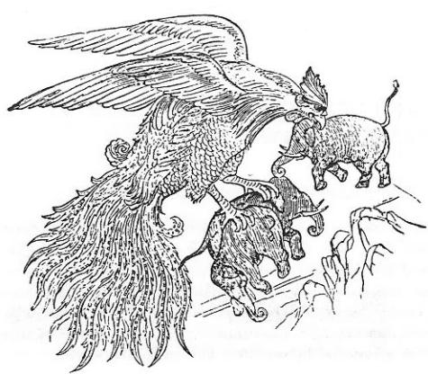

(Er-Töştük Destanı)
Manas destanında Manas-Han'ın, kuzeydeki İlemen ve Tokoman illerine de akın yaptığı anlatılmaktadır. Aşağıdaki efsane İlemen adlı kabilenin ataları ile ilgili bir hikâyedir. Burada İlemen-Bay adlı bir reis de karşımıza çıkmaktadır. Aslında bu adın kabile ile mi; yoksa kabilenin reisi ile mi ilgili olduğunu bilmiyoruz. Adın, İli nehri ile ilgili olması da muhtemeldir. Genel olarak Orta Asya’da efsanelerin bir öz kısmı ve bir de sonradan çeşitli ozanlar tarafından ilâve edilen yeni parçaları vardır. Efsanelerin özü, çoğu zaman gerçekle ilgilidir ve yarı tarih olaylarını içinde toplar. İlâveler ise, yine Orta Asya mitolojisinden ilhamını alan bir nevi peri masallarıdır.
Bu efsanede, Er-Töştük'ün Urum-Han'la mücadelesine ait olan kısım, efsanenin öz bölümü olsa gerektir. Aslında Manas Destanında da burada olduğu gibi, Urum ve Kırım-Han'ları ile yapılan harpler vardır. Urum-Han, OĞUZ Destanında da geçer. Fakat bu efsanede mitoloji, kendisini daha baskın olarak göstermiş ve Urum-Han'la Kırım-Han'ın ülkeleri yeraltı dünyasına indirilmiştir. Efsane iyice ve dikkatle okununca, bu harplerin anlatılışında tarih kokusunu alma mümkündür.
Efsanenin çıkış yeri hakkında bir bilgimiz yoktur. Yalnızca bir yerde, Er-Töştük'ün sürülerini Alma-Bulak adlı bir yerde yaydığı söyleniyor (Proben, II, 530).
İlemen-Bay'ın efsanevî bir kimse olduğu, onun neslinden de anlaşılmaktadır. Bu kabile reisinin dokuz oğlu vardı. Diğer Türk efsanelerinde olduğu gibi, bu dokuz oğuldan, dokuz soy türeyecektir. Bu da bize, İlemen-Bay'ın daha ziyade efsanevî bir kimse olabileceğini göstermektedir.
İlemen-Bay'ın bir de kölesi veya hizmetçisi vardır. Bunun adı ise Sarban'dır. Sarban, bir Moğol adıdır. Bu efsaneden bazı tarih gerçekleri çıkarmak icap ederse, bu kabileye vaktiyle bazı Moğolların tâbi oldukları; fakat sonradan büsbütün kuvvetlenerek İlemen-Bay'ın oğullarına da hâkim oldukları sonucunu çıkarabiliriz. Er-Töştük, eski kölelerinin başkaldırmalarına son vermiş ve bu suretle komşuları ile mücadeleye girişmişti.
İlemen-Bay, kendi oğlu yetişince, Türk mitolojisi gereğince kötü baba rolüne girmiştir. Kirli kız Bok-Turu, bir dev şekline girip onu öldürmek isteyince, oğlunu bile feda etmekten çekinmemiştir. Burada da Deli Dumrul'un babasının bir proto-tipini görüyoruz. Oğuz Han'ın babası Kara-Han da böyledir.
Oğlanın ruhunun bir eğede olması ve bu eğenin yok olması ile oğlanında ölme olayı, Orta Asya ve eski Türk masalları ile ve Şamanizm'in özelliklerinden biridir. Başka bir canlıda veya eşyada saklanan bu ruha, Orta Asya’da Ervah, arbak, vs. derlerdi. Sayan Prof. A. İnan, bu konuyu «Şamanizm» adlı eserinde incelemiştir.
Efsane ile ilgili Orta Asyalı Bey soyunun dokuz oğlu varken, batıdaki Urum ve Kırım-Han'larının yedi kızı vardır. Batı Türklerinde de yedi rakamının mukaddes olduğunu söylemiştik.
Er-Töştük'ün yeryüzündeki gerçek karısı Kenceke-Hatun idi. Bu efsanede, yer altında yaşayan Kırım-Han'ın kızı Ak-Çenem'le de evlenmiştir. Bu kızdan, yine yerin altında Bir-Bilek adlı bir oğlu olmuştur. Er-Töştük yeryüzüne çıkınca, birer birer yeraltındaki bütün bu ilişkileri bitirir ve efsanenin kahramanını yine eski karısı Kençeke ile birleştirir.
Temir-Kulak, Ay-Kulak, Kün (veya Kan)-Kulak, Çoin-Kulak, Yantakçı, gibi dev adlarına da rastlanır. Çoğu, kulaklarının özelliklerine göre sınıflandırılmışlardır (Bk. S. 544-6).
Şeytanlar ve kötü ruhlar hep yer altından çıkarlar. Bu da eski Türk inanışlarının gereğidir. Yer altından çıkan bir kaynakta, ciğer gibi bir şeyin görülmesi ve bu şeyin büyüyerek dev olması, Tepe-Göz ve Moğolların Yeke-Nidun efsanesini hatırlatır.
Er-Töştük'ü alarak yeryüzüne çıkaran kuş, Anadolu masallarındaki Zümrüd-ü Anka kuşundan başka bir şey değildir. Gerçekte ise bu efsanevî kuş, Hint an'anesindeki Garuda kuşudur. Bu motifin kökü, Hindistan'da olabilir. Ama masala giriş ve anlatılış şekli ise, Hint masallarında başka türlü, Türk masallarında ise daha başka türlü olmuştur. Er-Töştük masalında, bu kuşa "Kara-Kuş" yani kartal denmektedir. Tünediği ağaç ise Hayat-ağacı’dır. Yine Orta Asya inanışlarına göre, ağacın altında bekçi olarak bir yılan bulunurdu. Buryatlar bu yılana "Abırğa" derler. Bu yılan hayat ağacını beklerdi. Bu masalda ise bu yılana "Acırga", yani ejderha denmektedir. Orta Asya’da bu kuşun karşısına bir de ikinci bir kuş konmuş ve aralarında mücadele meydana getirilmiştir. Bu Er-Töştük masalının en güzel paralellerini de, yine Anadolu masallarında buluyoruz. Masalın kahramanı, her sene kartalın yavrularını yiyen ejderhayı öldürür. Kuş da onu yeryüzüne çıkarmak ister. Kırk koyun ve kırk tulum su alarak göğe çıkarlar. Ama yolda kuşun yiyeceği biter. Bunun üzerine adam kendi etlerini kesip kuşa yedirtir. Yere inince de, kuş adamı yeniden iyileştirir. Kuşun insanı gençleştirmesi ve iyileştirme kudreti de, hayat ağacı üzerinde tünemesinden ileri geliyordu. Rus seyyahı Potanin, hayat ağacı üzerindeki ejderha ile Garuda kuşu arasında meydana gelen mücadeleler hakkında, çok güzel Orta Asya masalları toplamıştır. (Oçerki, IV, s. 188). Prof. W. Eberhard'ın Anadolu masalları hakkındaki kitabında da bu efsanenin paralellerini bulabiliyoruz. (Türkische Märchen, s. 79).
İlaman-Ilaman boyunun atası Er-Töştük masalında geçen devler hep kulak şekillerine göre ad almaktadırlar. İran ve Müslüman mitolojisinde de, insana benzemeyen acayip mahlûklar (stature deforme) kulak büyüklüklerine göre özellik kazanmışlardı. Meselâ Han-nâme'de Karnülbakar dağından çıkıp Oğuz-Han'a saldıran, Ye'cuc-Me'cuc halkının kulakları o kadar büyüktü ki, savaşta kulaklarına sarındıkları için, onlara bir türlü kılıç ve ok işlemiyordu (O. Şaik Gökyay, Han-nâme, Necati Lugal armağanı, s. 290). Hâdislerde de kulaklarından birini altına döşek gibi, diğerini de üzerine yorgan gibi serip yatan bazı kavimlerden söz açılıyordu (I. Hami Danişmend, Türklerle Hind-Avrupalıların menşe birliği, s. 162).
9 âsil soya âdi Moğolların hükmedişi:
"Bir İlemen-Bay varmış, sekiz oğlu ve bir de Sarban adlı bir hizmetçisi varmış. Sarban adlı bu çobanı, beyin sürülerini otlatır, çoğaltırmış, ama beyine ne et, ne de süt verirmiş. Yalnızca "Gök bir öküz" verirmiş. Beyi de bu öküze binip gezermiş. Artık bir gün beyin sabrı tükenmiş, Tanrı'ya şöyle demiş:
"Maldan mahrum olmadım, başdan mahrum olmadım,
"Attan mahrum olmadım, aşdan mahrum olmadım,
"Ey Tanrım, büyük Tanrım! Sekiz er oğul verdin,
"Sayısız mallar verdin, Sarban adlı kul verdin.
"Sekiz oğlum kör oldu, Sarban kulum bey oldu,
"Ben sana ne yaptım ki, halim de böyle oldu!"
Bu sırada gökten kara bir rüzgâr esmiş ve şöyle demiş:
"Maldan mahrum oldun mu, başdan mahrum oldun mu?
"Sen cimri bir zenginsin, hiç faydalı oldun mu?
"Kurban kes bir kaç tane, var az olsun sığırın
"Sun Tann'ya kurbanı, düşünme, ona sığın!"
"Bey evine döner, dönmez, hemen bir kaç sığır kestirir ve Tanrı'ya kurban eder. Bir de bakar ki, hâmile karısı da bir oğlan doğurmuş. Çocuk, ikinci gün de anne diye, altıncı günde de baba diye konuşmağa başlar. Kalkar yerinden der ki:
- "Baba ben sığırları gütmeğe gideceğim." Bunu der ve başlar sığırları gütmeğe.
"Diğer Türk masallarında olduğu gibi, bu masalda da oğlanın bir adı yoktur. Ziyafetler verirler, halkı toplarlar. Fakat hiç kimse oğlana ad bulamaz. Birden aksakallı biri gelir ve oğlanın adını Er-Töştük kor ve gider.
"Bahar gelir, kuzular doğurur, inekler doğurur, kısraklar doğurur, hepsi büyürler. Kış gelir, artık hayvanlar kesilecek hale gelirler. Babası, Er-Töştük'ü sürüleri alıp gelmesi için gönderir. Oğlan yaylaya gelir, çobana gider. Bakar ki çoban duruyor. Sekiz-kardeşi de esir gibi onun önünde el bağlamış oturuyor. Er-Töştük, sürüleri almağa geldim diye gürler. Çoban korkar, Sekiz-kardeşi korkar. Peki derler, al da git hepsini. Oğlan bakar ki sürü eksik. "Bunlar nerede," diye sorar. Derler ki : "Bir genç geldi, sürünün bir kısmını aldı gitti."
"Oğlan buna kızarak, "Ben şimdi onu yakalarım," deyip yola çıkar. Yolda kötü bir çadırın ve kötü bir atın yanında oturan kara bir kız görür. Ona kaybolan sürüsünü sorar. O da, gel bu gece burada kal da sonra yola çıkarsın, der. Oğlan girer çadıra, ama pislikten midesi bulanır. Yaptığı yemek, verdiği içkinin de içi pislikle doluymuş. Ama ne yapsın! Yatar bir kuru keçeye, dalar uykuya. Gece yarısı birdenbire uyanır. Bir de ne görsün, o pis çadır, baştan aşağıya kadar altın ve gümüşle süslenmiş. Yanında da çok güzel bir kız uyuyor. Kızın geceliğinin on iki düğmesini açar, kar gibi bir göğüs parlar. Elini dokundurmak ister ama kız uyanır. "Er-Töştük, elini herşeye vuramazsın! Çek elini, der. Oğlan çeker, atına binip, babasının yurduna gelir.
Gel zaman git zaman, oğlan bir gün : "Ne sekiz kardeşim ve ne de ben evliyim. Artık evlenme zamanımız geldi," der. Babasıyla çoban, oğlanlara kız aramağa giderler. Giderken de oğlan, babasına bir mendil verir. Baba, der, Bu yolun üzerinde kötü bir kız göreceksin; onu görürsen, bu mendili ona veriver.
"Babası, gelir, kötü bir kıza rastlar. İğrenir, ne yemeğini yer, ne içkisini içer, çıkıp giderken, kız Bey'e sorar:
" - Er-Töştük bana hiç bir şey göndermedi mi?" Bey bunu duyunca:
" - Az daha unutuyordum kızım," der, cebinden mendili çıkarır kıza verir. Bundan sonra çıkar gider, Agay-Han’ın yurduna. Onlarda kız isteme usulü önce, "elbisemi kaybettim bulamıyorum; atımı kaybettim arıyorum," diye söze başlamakla olurmuş. Lâf gelince, oğlanın babası, dokuz oğlu olduğunu, oğullarına birer gelin aradığını söyler. Agay-Han ve karısı çok sevinir. Küçük kızlarına : - "Haydi kızım, koyun kes, yemek hazırla," derler. Kız her şeyi yapar, hazırlar, tamamlar. Kızı, oğlanın babasının da gözü tutar. Allah’ın emriyle kızı ister. Babası da, razı olur gibi olur ama kız : - "Hani, bir nişan hediyesi gelmeyecek mi?" Diye sorar. Oğlanın babası, bir mendille bir kürk hediye eder, gider. Fakat kızın babası hediyeye yanaşmaz. Kız en iyi atları, en iyi develeri önüne aldığı gibi, sürüp oğlana götürmek ister. Babası mani olmak isterse de, kız : - "Oğlan buraya gelirse, beni de alır, develerini de alır. Gel iyisi mi, böyle ver!" Diye babasını razı eder. Kız katar, önüne çeyizini, düşer oğlanın yoluna. Yolda gelirken, kirli, Kara-kız Bek-Toro'ya rastlar. Bek-Toro sorar kıza : - "Nereye?" Diye. Er-Töştük'e varmak için giden kızın adı da, Kençeke imiş. Kençeke-kız cevap vermez. Ama kirli kız yine durmaz, ona şöyle der:
" - Er-Töştük'ün kollarında sana saadetler dilerim!" Kençeke bu sözü duyunca kızar, o da ona şöyle cevap verir:
" - Bu çeyizi, başkasından mı çaldım? Er-Töştük'ü yoksa senden mi çaldım?" diye lâf vurur. Sonra da, yolumdan çekil, diyerek çekip gider. Ama kirli kız Bek-Toro yine peşini bırakmaz. İki kız karşılıklı çok güzel şiirler söylerler. Ama Kençeke kız dinlemez ve oğlanın babası İlemen-Bay'la yollarına devam ederler. Az giderler, uz giderler. Yerlere kadar, kıvrılmış, âdeta kendileri için bir çadır haline gelmiş bir kavak ağacına rastlarlar. Derler, gelin burada geceleyelim de, yarın yine yolumuza devam ederiz. Böyle deyip orada gecelerler.
"Tepe-Göz" ve "Deli-Dumrul" masallarına benzer olaylar:
"Sabah olur, atları suya götürürler. Ama atlar ürküp âdeta göklere çıkarlar. Bakarlar ki, suda bir ciğer yüzüyor. İlemen-Bay," "Kim bu davarı kesmiş de, ciğerini suya atmış" diye, ciğeri mızrakla iter. İtince, ciğerden Yelmoğus adlı dev çıkar ve İlemen-Bay'ın boynuna biner. İlemen-Bay bağırmağa başlar:
"Kâfiroğlu Yelmoğus! Gel öldürme özümü!
"Tepe gibi yükselen, ak evimi vereyim!
"Ak sürümün hepsini, sığırımı vereyim!"
"İlemen-Bay böyle der. Der ama dev hiç oralı olmaz. Yelmoğus güler ve başkalarını söyle der. Bunun üzerine İlemen-Bay:
" - Gel sana sekiz oğlumla, gelinlerimi vereyim, vereyim de öldürme!'' Der. Dev yine olmaz razı. "Eh, ne yapayım," der İlemen-Bay, "Gel de, alp oğlum Er-Töştük'le, akıllı gelinimi vereyim," der ve "Oğlumun ruhu, ocağın taşının altındaki eğededir," der ve dev de sevinip gider. Er-Töştük babasının yanına gider. Bakar ki babası ocakla oynuyor. Babasının yanında oturur, İlemen-Bay, bir fırsatını bulur, kızgın demirle oğlanın başını yarar. Oğlan, fırlar dışarı, bağırmağa başlar. Karısı bakar ki, kocası iyice yanmış. İşi anlar ve kocasına : - "Eğer beni seviyorsan, git babanın elindeki o eğeyi al da gel," der. Oğlan gider, eğeyi babasından ister ama, babası bulamaz. Der ki:
" - Hani benim bir gece konakladığım, eğri bir kavak vardı ya, herhalde orada unutmuş olacağım," der. Oğlan atlanıp gitmeğe hazırlanır. Akıllı kız yine vaziyetten şüphelenir : "Bari benim atım Çal-kuyruk'a binip git", der. Çünkü kız kendi atının kutsal bir at olduğunu bilirmiş. Oğlan belki dönmez diye, bir gece de muratlarını alırlar, uzun uzun şiirler söyledikten sonra ayrılırlar.
"Eğri kavağa gelince, at Allahtan dile gelir ve oğlana akıl vermeğe başlar. Gelirler eğri kavağa, bakarlar ki dev anası ağacın dibinde oturup duruyor. Oğlan selam verir ve devden eğesini ister. Dev anası : -"Ben kalkamam," der. Atın öğüdüne uyan oğlan, deve : - "Peki o arkandaki insanlar nedir?" Diye sorar. Dev anası merak edip arkasına bakınca, oğlan eğeyi alıp atına biner ve at uçmağa başlar. Ama dev anası, oğlanı güzel sözlerle kandırmak ister ve oğlana : - "Dur oğlan, benden sana artık zarar gelmez. Atın dizginini biraz çek," der. Oğlan dizgini sıkınca, aşağıya düşerler, bir kayanın içinden yerin dibine giderler. Karşılarına bir kulağı yerde, bir kulağı gökte, üst dudağı buzlanmış, alt dudağı pis kokan eli Hokend'de, ayağı Buhara'da bir dev çıkar. Oğlan deve yanaşır, kim olduğunu sorar. O da, bana Ay-kulak derler der. Duydum ki, der, Er-Töştük buraya gelmiş, onu bekliyorum, der. Oğlan aşağı iner. Devin iki kulağını aşağı indirip, onu kırk dağa çarpar ve öldürür. Sonra da gider, Kan-kulak ve Çoin-kulak adlı devleri de öldürür. Çıkar yine dev anasını aramağa. Oğlanın atı Çal-kuy- ruk, dev anasının, Kırım-Han'ının evine gittiğini haber verir, hemen oraya yollanırlar.
"Urum-Han" ve "Kırım-Han"la savaş:
"Oğlan, Kırım-Han'a gelir, yakıp yıkıp evine hücum eder. Kırım-Han korkudan tahtını bırakıp kaçar, oğlan da onun tahtına geçer. Bunu gören Kırım-Han, oğlana ne istediğini sorar. Oğlan da, ben kızını isterim der. Yok, kızını vermezsen canını da dilerim, der. Kırım-Han korkar, oğlana kızını verir, oğlanı kendine damat yapar. Ama oğlana der ki, "Yantakçı adlı bir düşmanım var, yerden mi gelir, yoksa gökten mi, bilmiyorum. Her sene gelir, neyim var, neyim yoksa alır götürür. Ne yaparsan yap, bunu yok et," diyor. Oğlan yola çıkıyor. Atı yine ona öğüt veriyor. Bir de bakıyorlar, karşıdan Yantakçı göründü. Böğürüp duruyor. Allahtan, oğlan bin kişilik bir ordu gibi, atı da bin at gibi kuvvetli oluyor. Oğlan kılıcını salladığı gibi Yantakçı'nın da kafasını koparıyor.
"Devanası bunu görünce, hemen bir cadı karısı oluyor, koşuyor Urum-Han'a. Aman Han'ım diyor, bu Er-Töştük benim oğlumu öldürdü. Kapını açma, içeriye onu alma, diyor. Urum-Han da kapılarını kilitleyip oturuyor. Er-Töştük gelip bakıyor ki kapılar kilitli, kimse kendinin yüzüne bakmıyor. Tuttuğu gibi, kapıları tekmeyle kırıyor, askerleri ayağının altında çiğniyor. Bunu gören Urum-Han, tahtını bırakıp kaçıyor. Ne istersin sen oğul? Diye soruyor. Oğlan da, kızını isterim diyor. Urum-Han'da büyük bir toy yapıyor ve kızını oğlana veriyor. Ama diyor ki, benim de Kaşana-Kara adlı bir düşmanım var, sen de onu yeniver diyor. Oğlan bakar ki atı da kederden, yorgunluktan zayıflamış, neredeyse ölecek. Oğlan atına : "Sen benim annemdin, babamdın, sana ne oldu da bana bakmıyorsun, bana öğüt vermiyorsun!" Der. At da : "Ben nasıl öğüt veririm. Bu, çok yaman, kâfir bir devdir" Der. Neyse, oğlan bu devle de uzun uzun güreşir. Güreşirken öyle şiddetli güreşirler ki, vadiler dağ, dağlar da vadi oluverir. En sonunda Er-Töştük onu da öldürür ve Urum-Han'ın kızı Ak-Çenem'i alır ve evine dönmek üzere yola çıkar...
"Yolda gelirken, yer altından bir ses gelmiş, Er-Töştük'e : - "Bana yardım et, ne olur, ateşinle gireyim, külün ile çıkayım!" Demiş. Er-Töştük bakmış ki, bu insan sesi bir kuyunun içinden geliyor. Eğilmiş, kuyu içine bakmış. Bir de ne görsün, kuyu içinde bir insan, kendine bakıp duruyor. Sormuş adama: - "Adın ne senin?" 0 da: - "Çoin-kulak" Demiş. Adamı hemen dışarı çıkarmış, yedirmiş, içirmiş, beslemiş. Bilmemiş ki, yer altından çıkanların hepsi Şeytandır. Aradan zaman geçmiş. Gel zaman, git zaman bir gün oğlan adama : - "Atımı getir," demiş. Adam da oğlana : - "Atını sen getir bana da, ben bineyim! Karın Ak-Çenem'in göğsünden de terini emeyim!" Demiş. Bu da yetmemiş gibi, oğlanın canına kastedip, hücum ederek başını kesip, öldürmüş. Er-Töştük'ün karısı Ak-Çenem'e sahip çıkmış. Atı Çal-Kuyruk'a da binip, atı âdeta öldürürcesine koşturmuş.
(Efsane, iyice okununca, bundan sonraki kısmın sonradan ilâve edildiği anlaşılıyor. Efsanenin esas kısmı, Er-Töştük'ün gençliği ile ilgili kısım olmalıdır. Başka bir ozan, buna ihtiyarlığını da ilâve etmiştir.)
"Er-Töştük gençliğinde, böyle "Kulak" lakabını taşıyan, yer altı şeytanlarını hep öldüre gelmişti. Ama öyle anlaşılıyor ki, bu çağda artık ihtiyarlamıştı. Kuvveti de azalmıştı.
""Şeytan Çoin-kulak yine bir gün avda iken, ahırda baygın olarak yatan atı Çal-Kuyruk, Er-Töştük'ün cesedini aramağa çıkar; bakar ki ölüsünü uğru köpekler götürmüş, yalnızca bir kemiği kalmış. At bu kemiği alıp yutar. Sonra da tükürür. Allahtan Er-Töştük dirilir. Çıkıp gelir eve. Ama bir yandan da Çoin-Kulak'dan korkar. Karısı Ak-Çenem, evin altında bir kuyu kazar. Onu içine kor. Her türlü yemeği ve içkiyi de önüne yığar. Akşam olur, Çoin-Kulak gelir. Uykuya dalar. Er-Töştük bir biz alıp beşikte yatan oğlana dürter. Oğlan feryat edince, şeytan babası da uyanır. Niye bu çocuk ağlar, der. Orta Asya inançlarına göre karı kocanın, ruhlarının da birleşmesi lazımmış. Çocuk, ancak o zaman rahat eder de uyurmuş. Dev, Ak-Çenem'e : - "Al-Taikı adlı yerde, bir altın pınar, bu altın pınarda sarı bir balık ve bu balığın karnında gümüş bir sandık, gümüş sandığın içinde de kırk kuş vardır. Benim ruhum, işte bu kırk kuşun ruhudur," der. Ak Çenem sabahleyin bunu hemen Er-Töştük'e söyler. Er-Töştük de gidip kırk kuşun başını koparır. Dev Çoin Kulak ölür. Ölür ama bu defa da iki aylık oğlu hücuma geçer. Neyse onu da öldürürler. Ak-Çenem'le Er-Töştük'den yeni bir oğlan olur. Adını Bir-Bilek korlar.
"Ama bir türlü yeryüzüne çıkamazlar. Yeraltı devleri peşlerinde kol gezer. Bir gün yine yeraltı devlerinden Temir-Kulak (Demir Kulak), Er-Töştük'ün karşısına çıkar. Vay! Der, Sen benim arkadaşımı öldürürsün ha! Diye, tuttuğu gibi Er-Töştük'ü kör bir kuyunun içine atar. Gider Ak-Çenem'i alır. Er-Töştük'ün oğlu Bir-Bilek bunu bir türlü hazmedemez. Bir fırsatını bulur, Dev Temir-Kulak'ı öldürür. Babasını arar, arar kuyunun içinde bulur. Alır getirir eve, bakar ki babası da iyice ihtiyarlamış. Baba oğlunu kucağına alır ve metheder. Ama oğlana babasının nazarı değer ve oğlan hemen orada düşer birden bire ölür. Kırgızlar, "göze gelme" deyimi için burada, "babasının dili öttü," diyorlar.

Şekil 52: Hint masallarındaki dev kuşu gösteren temsili bir resim.
"Baba oğlunu kaybedince yeryüzüne çıkmak üzere Kırım-Han'dan izin alır ve "yeraltının ortası"na gelir. Tam yer altının ortasında, çok büyük bir çınar varmış ve zirvesi de ta göklere değermiş.
(Masala burada bir ilâve yapılıyor ve araya Zümrüd Anka kuşu ile ilgili motifler konuyor:)
"Er-Töştük, büyük ağacın yanına geldiği zaman, bir ejderhanın ağaçtan yukarı tırmanarak çıktığını görmüş. Bu ağacın üzerine de her sene bir kartal (Kara-kuş) yavrularmış ve ejderha da yuvaya çıkıp onları yermiş. Er-Töştük kılıcına sarılınca, hemen ejderhayı öldürmüş. Az sonra kartal gelmiş ve yavruları ile "iyilik" ve "kötülük" üzerinde konuşmuş. Er-Töştük'ü ağacın altında görünce de, hemen inip yutmuş. Bunu gören yavruları durumu anlatmışlar. Kartal, işi anlayınca adamı tükürmüş ve dışarı çıkarmış. Bu suretle Er-Töştük, taptaze ve genç bir adam olmuş. Bunun üzerine kartala, "Beni memleketime götür," diye yalvarmış. Kartal da onun ricasını kabul etmiş. Kırk koç yiyecek yapmışlar ve kırk koç da keserek tulumlarına su doldurmuşlar. Bundan sonra kartala binerek yeryüzüne çıkmağa başlamışlar. Kartal göğe çıkmak için 40 çevre yapmış. 0 kadar yükseklere çıkmış ki, yeryüzü adeta bir eğer örtüsü halinde görülmeğe başlamış. Az sonra etler bitmiş. Bunun üzerine Er-Töştük kendi etlerini ve gözünü çıkarıp kuşa vermeğe başlamış. En sonunda yeryüzüne inmişler. Kartal yeniden adamı yutarak tükürmüş ve Er-Töştük sapasağlam bir insan haline gelmiş. Kartal, Er-Töştük'ü bırakarak tekrar yerin dibine inmiş, Er-Töştük memleketine dönmüş ve karısı Kençeke'yi görmüş ama, kadın gençleşen kocasını tanımamış. Bir misafir gibi kendi evine gitmiş ve konuşmuşlar. En sonunda kadın da kocasını tanımış ve mes'ut olarak yaşamışlar. Atları Çal-Kuyruk da onların yanlarından hiç ayrılmamış. Zaten ta yerin dibinde iken, Çal-Kuyruk bir rüya görmüş ve hanımına kavuşacağını efendisine müjdelemiş imiş. Bu sebeple karı, koca iki kişi iken; atla üç olmuşlar."